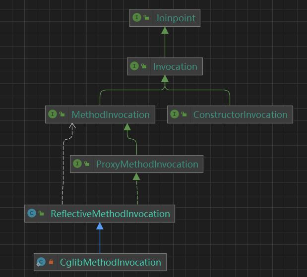
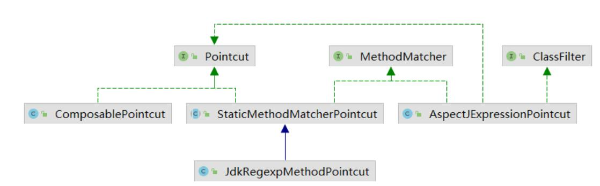

SpringAOP源码详解
AOP简介
AOP的全称是Aspect Oriented Programming，即面向切面编程，AOP是通过预编译方式和运行期间动态代理实现程序功能的统一维护的一种技术。AOP 是一种编程思想，是面向对象编程（OOP）的一种延续和补充。面向对象编程将程序抽象成各个层次的对象，而面向切面编程是将程序抽象成各个切面（Aspect）。
AOP采取横向抽取机制，将一整套功能代码抽离出来，形成切面（Aspect），然后通过拦截等方式穿插到对象中去执行。
在 Spring AOP 中动态代理的实现方式可分为 JDK 动态代理和 CGLIB 字节码提升，JDK 动态代理只能对接口进行代理，而 CGLIB 字节码提升对类也是可以进行代理的。也就是说：
- 如果要代理的对象，实现了某个接口，那么Spring AOP会使用JDK Proxy，
- 而对于没有实现接口的对象，这时候Spring AOP会使用 Cglib 生成一个被代理对象的子类来作为代理。

Spring AOP 和 AspectJ AOP 的区别
AOP实现的关键就在于AOP框架自动创建的AOP代理，AOP代理则可分为静态代理（例如：原生AspectJ）和动态代理（例如：spring aop）两大类，其中静态代理是指使用AOP框架提供的命令进行编译，从而在编译阶段就可生成 AOP 代理类，因此也称为编译时增强；而动态代理则在运行时借助于JDK动态代理、CGLIB等在内存中“临时”生成AOP动态代理类，因此也被称为运行时增强。
Spring AOP 属于运行时增强，而 AspectJ 是编译时增强。 Spring AOP 基于代理(Proxying)，而 AspectJ 基于字节码操作(Bytecode Manipulation)。
Spring AOP 已经集成了 AspectJ ，AspectJ 应该算的上是 Java 生态系统中最完整的 AOP 框架了。AspectJ 相比于 Spring AOP 功能更加强大，但是 Spring AOP 相对来说更简单，
如果我们的切面比较少，那么两者性能差异不大。但是，当切面太多的话，最好选择 AspectJ ，它比 Spring AOP 快很多。
Spring AOP的具体实现：
AOP相关定义：
- Aspect（切面）：封装用于横向插入的系统功能（如事务、日志等）的类
- Joinpoint（连接点）：在程序执行过程中的某个阶段点，在Spring中通常指方法
- Pointcut（切入点）：JoinPoint的集合，是程序中需要注入Advice的位置的集合，指明Advice要在什么样的条件下才能被触发，在程序中主要体现为书写切入点表达式。切面与程序流程的交叉点，即用于匹配那些需要处理的连接点
- Advice（通知/增强处理）：AOP框架在特定的切入点执行的增强处理，即在定义好的切入点处所要执行的程序代码
@Before： 标识一个前置增强方法，相当于BeforeAdvice的功能.
@After： final增强，不管是抛出异常或者正常退出都会执行.
@AfterReturning： 后置增强，似于AfterReturningAdvice, 方法正常退出时执行.
@AfterThrowing： 异常抛出增强，相当于ThrowsAdvice.
@Around： 环绕增强，相当于MethodInterceptor.
- Target Object（目标对象）：指所有被通知的对象，也被称为被增强对象
- Proxy（代理）：将通知应用到目标对象之后，被动态创建的对象，即被增强对象之后的对象
- Weaving（织入）：将切面代码插入到目标对象上，从而生成代理对象的过程
- Introduction（引入）：允许我们向现有的类添加新的方法或者属性
Joinpoint
Joinpoint（连接点） 在 AOP 中是指在程序执行过程中的某个阶段点，简而言之就是指类中的方法、构造器、字段。

Joinpoint 接口表示一个通用的运行时连接点，是具有一定业务逻辑的，其接口定义如下：
1 | public interface Joinpoint { |
Invocation 接口表示对程序的调用。对于 AOP 而言，是通过拦截程序中连接点，然后对连接点进行增强，但增强的阶段可能发生在连接点之前，也可能发生在连接点之后，所以对连接点原有的业务逻辑进行调用也是至关重要的。其接口定义如下：
1 | public interface Invocation extends Joinpoint { |
MethodInvocation 接口表示对方法的调用，由于 Spring AOP 仅支持方法级别的连接点，所以 Spring 对 AOP 的实现基本都是基于 MethodInvocation 的。其接口的定义如下：
1 | public interface MethodInvocation extends Invocation { |
ReflectiveMethodInvocation 和 CglibMethodInvocation 都是 MethodInvocation 的子类，ReflectiveMethodInvocation 是 Spring 基于 JDK 动态代理实现的 Joinpoint ，而 CglibMethodInvocation 是Spring 基于 CGLIB 实现的 Joinpoint。
Pointcut
Pointcut（切入点）在 AOP 中是指切面与程序流程的交叉点，即用于匹配那些需要增强的连接点，简而言之就是充当过滤器的角色。

Pointcut 接口是 Spring AOP 中切入点的抽象，由ClassFilter和MethodMatcher组成，其接口定义如下：
1 | public interface Pointcut { |
ClassFilter 接口表示限制 Pointcut （切入点）或Introduction（引入）与给定目标类集的匹配的过滤器，ClassFilter 中定义了用于匹配类的逻辑条件，其接口定义如下：
1 | public interface ClassFilter { |
MethodMatcher 接口用于检查目标方法是否符合通知的条件 ，MethodMatcher 中定义了了用于匹配方法的逻辑条件，其接口定义如下：
1 | public interface MethodMatcher { |
Pointcut 接口的实现类有很多，但最为常见的实现类是 AspectJExpressionPointcut，AspectJExpressionPointcut 类会对 @Pointcut 注解或者 aop:pointcut 标签中定义的表达式进行解析，然后来匹配连接点。
Advice
Advice（通知/增强处理）表示 AOP 框架在特定的切入点执行的增强处理，即在定义好的切入点处所要执行的程序代码。
1 | public interface Advice { |
Interceptor 接口表示一个通用的拦截器，继承了 Advice 接口，相当于一个标记接口，其定义如下：
1 | public interface Interceptor extends Advice { |
MethodInterceptor 接口是 Interceptor 接口的子类，在 Spring AOP 内部，Advice 的子接口（如：BeforeAdvice、AfterAdvice等）都会转换成 MethodInterceptor 来使用，其接口定义如下：
1 | public interface MethodInterceptor extends Interceptor { |
在 AOP 中根据 Advice 在 Jointpoint 的位置，可将 Advice 分为5种类型，分别为：
- 前置通知（Before Advice）：在连接点（Join point）之前执行的通知。
- 后置通知（After Advice）：当连接点退出的时候执行的通知（不论是正常返回还是异常退出）。
- 环绕通知（Around Advice）：包围一个连接点的通知，这是最强大的一种通知类型。 环绕通知可以在方法调用前后完成自定义的行为。它也可以选择是否继续执行连接点或直接返回它们自己的返回值或抛出异常来结束执行。
- 返回后通知（AfterReturning Advice）：在连接点正常完成后执行的通知（如果连接点抛出异常，则不执行）
- 抛出异常后通知（AfterThrowing advice）：在方法抛出异常退出时执行的通知
执行顺序：
没有异常情况下的执行顺序：
around before advice
before advice
target method 执行
around after adviceafter advice
afterReturning advice
出现异常情况下的执行顺序：
around before advice
before advice
target method 执行
around after advice
after advice
afterThrowing advice
java.lang.RuntimeException：异常发生
AopProxy
AopProxy 接口用于创建代理对象，其接口定义为：
1 | public interface AopProxy { |
AopProxy 接口有两种类型的实现，一种是基于 JDK 动态代理实现的 JdkDynamicAopProxy，另一种是基于 CGLIB 字节码提升实现的 CglibAopProxy 和 ObjenesisCglibAopProxy。
AopProxyFactory 接口是 AopProxy 的抽象接口工厂，它会根据 AdvisedSupport（AOP的配置类）创建 AopProxy 接口的实现类，其接口定义为：
1 | public interface AopProxyFactory { |
AopProxyFactory 接口的默认的实现类是 DefaultAopProxyFactory。
TargetSource
TargetSource 接口用于获取AOP调用的目标对象，其接口定义如下：
1 | public interface TargetSource extends TargetClassAware { |
常见的实现类有：
- HotSwappableTargetSource：允许热交换的 TargetSource 实现
- SingletonTargetSource：单例的 TargetSource 实现，是 TargetSource 的默认实现
- AbstractPoolingTargetSource：基于池（比如：CommonsPool ）技术实现的 TargetSource
- ThreadLocalTargetSource：基于 ThreadLocal 技术实现的 TargetSource
- PrototypeTargetSource：基于 IoC 容器技术实现的 TargetSource
其中 AbstractPoolingTargetSource、ThreadLocalTargetSource、PrototypeTargetSource 都是AbstractPrototypeBasedTargetSource的子类，是原型的 TargetSource 实现。
Advisor
Advisor 接口是 Advice 的连接器，用于连接 Advice 和 Pointcut 或者连接 Advice 和 Introduction，其接口定义如下：
1 | public interface Advisor { |
Advisor 的作用类似于 AOP 中 Aspect，它们都是封装用于横向插入的系统功能（Advice）。
AdvisorAdapter
AdvisorAdapter 接口用于将指定的 Advice 转换为 Interceptor，其接口定义为：
1 | public interface AdvisorAdapter { |
常见的实现类有：
- MethodBeforeAdviceAdapter：用于将 MethodBeforeAdvice 转换成 MethodInterceptor
- ThrowsAdviceAdapter：用于将 ThrowsAdvice 转换成 MethodInterceptor
- AfterReturningAdviceAdapter：用于将 AfterReturningAdvice 转换成 MethodInterceptor
AdvisorAdapterRegistry 接口是 AdvisorAdapter 的注册中心，其接口定义为：
1 | public interface AdvisorAdapterRegistry { |
AdvisorAdapterRegistry 接口的默认实现是 DefaultAdvisorAdapterRegistry，AdvisorAdapterRegistry 可以根据给定的的 Advisor 获取对应的 MethodInterceptor。
参考：
https://www.yht7.com/news/152919
https://blog.csdn.net/baidu_37366055/article/details/109989145